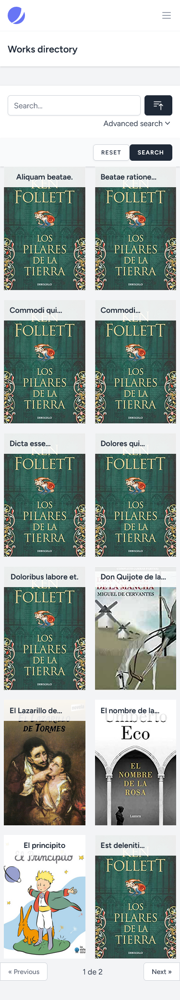
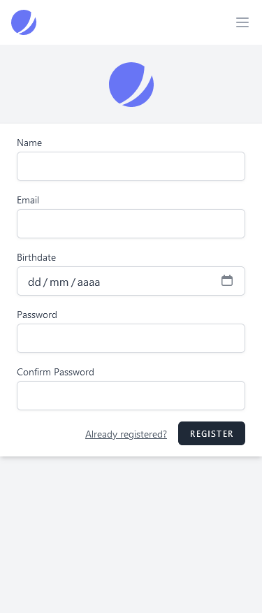
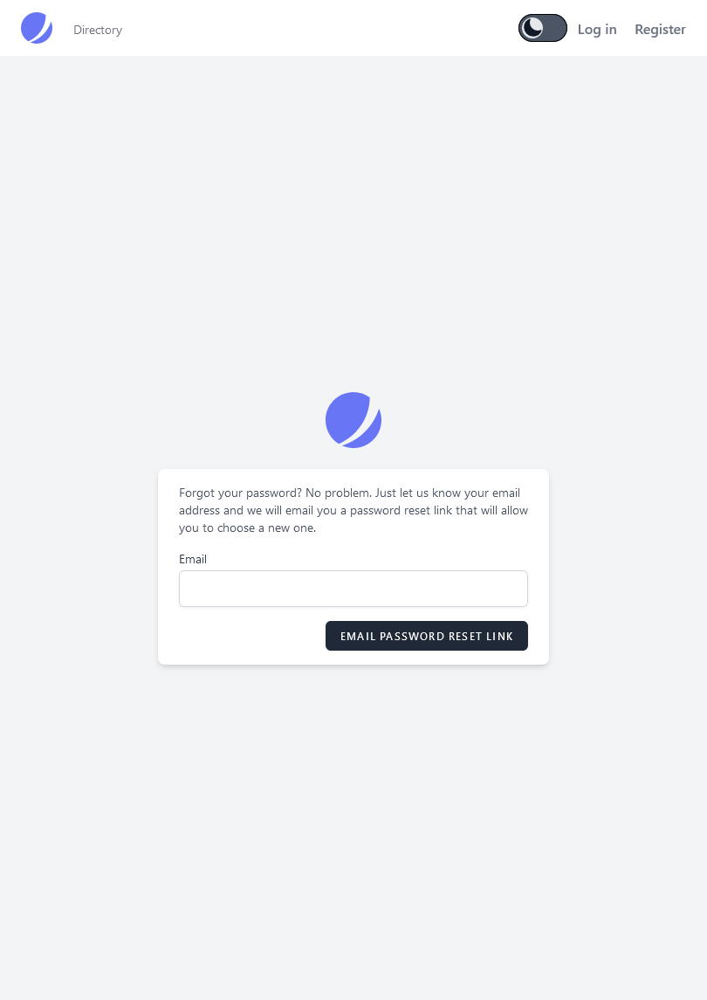
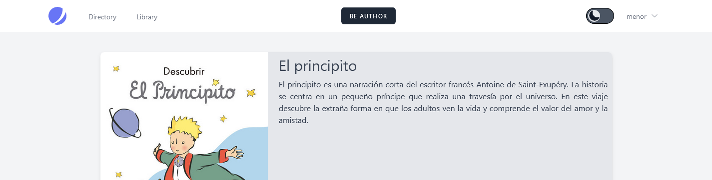
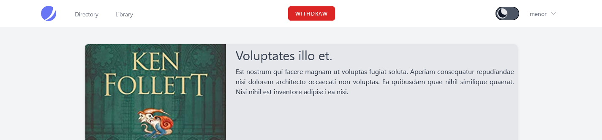

Descripción general del proyecto
La aplicación "comics y cuentos" permite a los usuarios leer y publicar obras en ella.
Funcionalidad principal de la aplicación
La aplicación se centra en ofrecer al usuario leer las obras publicadas en la aplicación y publicar sus propias obras.
Los usuarios podrán realizar diferentes acciones en la aplicación:
- Los usuarios no registrados (guest) solo pueden leer las obras que tengan disponibles.
-
Los usuarios registrados (user) tienen opciones adicionales:
- Leer todas las obras disponibles (si el usuario es menor no tiene a acceso las obras para adultos).
- Administrar su "biblioteca".
- Solicitar permisos para publicar.
-
Los usuarios que ya tienen permiso para publicar (author) tienen más opciones:
- Gestión de sus obras.
- Gestión de los capítulos de dichas obras.
-
Los usuarios administradores (admin) pueden:
- Gestionar usuarios (user y author).
- Eliminar y editar obras.
- Eliminar capítulos.
Objetivos generales
- Objetivo principal: "Almacenar y dar acceso de las obras publicadas".
- Gestionar registro, logueo y deslogueo de usuarios.
- Gestión de los usuarios, obras y capítulos por parte de administradores.
- Gestionar la creación, modificación y borrado de obras.
- Gestionar la creación, modificado y borrado de capítulos.
- Gestionar el estado de la obra y capítulos para cada usuario.
- Uso del lector con sus diferentes vistas.
Elemento de innovación
- Laravel Framework.
- Livewire Framework para el uso de alpinejs y tailwindcss
- Amazon S3 como servicio de almacenamiento.
- CKEditor para la creación y edición de obras cuyo contenido no son imágenes.
This is the first view we access when entering our Application.
In it we can see:
- The navigation menu, which allows us to move between the different views and functions (it will be Available in all views of the app).
- A carousel, which will show us 3 random works.
- The novelties are the latest works created by the authors.
Large screens

Medium screens

Small screens
Dark mode
We also have the option to alternate between dark and luminous mode:

In this view we can search among all the works on the web.
In it we can see:
- A field to search for the name of the work (this field allows you to be positioned in it if you press Enter will be made the search).
- A button to order the search results in a descending or ascending way.
- An drop -down to show advanced search options.
- The search buttons or to apply filters.
Large screens

Medium screens
Small screens
This is the view with the applied filters:
In it we can see:
- State filter.
- Type filter.
- Age filter (Here we have two options to choose, the concrete age or a predefined age range).
- Gender filter.

Age control
Throughout the application we have an age control so that guest or minor users cannot see the works for adults.
Guest or minors filtering +18.
Adults filtering +18.
In this view we can see the information of a work.
In it we can see:
- The cover, the recommended minimum type and age.
- The title, the synopsis, the State, the genres, and the author of the author.
- A button to order the chapters in descending or ascending.
- The chapters.
Large screens
Medium screens

Small screens
In this view we can see the author's information.
In it we can see:
- Author's photo.
- The alias.
- The biography.
- Buttons to find the works of this author for his state.
- The works leaked by the selected state.
Large screens
Medium screens
Small screens

In this view we can read the chapters of the works.
Text
In it we can see:
- Chapter title.
- A button to return to the work.
- Buttons to start reproduction of the chapter using TTS.
- Chapter content.
- Buttons to move between chapters (If there are no chapters to move does not appear the button).
Large screens

Medium screens

Small screens
Reproductor TTS
When we press the button to play the work by TTS, we have the following options:
- In this option the work is being reproduced and we have the option to pause the reproduction to continue later or stop it completely.
- In this option the work is slow and we can resume reproduction or stop it completely.

Image
In it we can see:
- Chapter title.
- A button to return to the work.
- A button to alternate between paginated view or cascade view.
- Chapter content.
- Buttons to move between chapters (If there are no chapters to move does not appear the button).
Paginate
Large screens
Medium screens
Small screens
Cascade
Large screens

Medium screens
Small screens

In this view a guest user can create an account.
In it we can see:
- Name field.
- Email field.
- Age field (optional).
- Password field.
- Confirm password field.
- Link to log in if you already have account.
- Form to send button.
Large screens
Medium screens
Small screens
In this view a guest user can log in.
In it we can see:
- Email field.
- Password field.
- Link to recover the password in case of forgetting it.
- Form to send button.
Large screens
Medium screens
Small screens
In this view a user can recover his password through an email.
In it we can see:
- Email field.
- Form to send button.
Large screens
Medium screens
Small screens
Reset pass
Following the link in the email received, it will be redirected to this view where you can change the password.

In this view the user can administer their account.
In it we can see:
- User information.
- Change of password.
- Double authentication factor.
- Session closure in other browsers.
- Account deletion.
Large screens
Medium screens
Small screens
In this view, the user can see the works that he has marked with some marker.
In it we can see:
- Buttons to find the works by the marker assigned by the user.
- The works leaked by the selected marker.
Large screens
Medium screens
Small screens
When a login user accesses this view, extra options are abilitated.
In it we can see:
- Drop -down to select the marker to add the work to your library.
- Button to mark the work as a favorite.
- A button that eliminates the follow -up of the work.
- Icons indicating that chapters has read the user.
- If you click on an "not read" icon the corresponding chapter and the previous ones will be marked as read.
- If you click on an "read" icon the corresponding chapter will be the last chapter read and the following will go to "not read" in case they are marked as such.
- When you access reader and the chapter has not been read, it will be marked as the last chapter read.
Large screens
Medium screens
Small screens
When a login user accesses this view, extra options are abilitated.
In it we can see:
- Button to give "like" or remove "like".
- Button to give "I don't like" or remove "I don't like".
Reader text
Reader image
A login user has the option to apply to be an author, as well as to withdraw your application.
In it we can see:
- Button to apply.
- Modal to select alias.
- Button to withdraw application.
- Modal to withdraw application.
Button to apply
Modal to select alias
Button to withdraw application.
Modal to withdraw application
In this view an author user can administer his author account and his works and chapters.
In it we can see:
- Author information (profile photo, alias and biography).
- Works management.
- Author rank deletion.
Large screens
Medium screens
Small screens.
In this view, the Author user can create and update their works.
In it we can see:
- Title field.
- Synopsis field.
- Front page field.
- A dropdown with the types.
- A dropdown with the states.
- A dropdown with the ages.
- The generos available to select.
- A preview of how you will see the cover.
- Form to send button.
Large screens
Medium screens
Small screens.
This is the view with the stuffed form and the preview showing the final result:
If a work is created, a modal opens that asks the user if he wants to create the first chapter of that work.
Modal to access to create the first chapter.
When the Delete button is pressed in the work, a modal will open to confirm that you want to erase the work.
In it we can see:
- Information that will happen.
- Cancel the deletion button.
- Button to confirm the deletion.
Modal to delete work
In this view an Author user can create a chapter for one of his works.
Text
In it we can see:
- Field number.
- Title field.
- Buttons to choose a chapter type (in this case text).
- Text editor, with format options.
- Button to submit form
Large screens
Medium screens
Small screens
With content:
Image
In it we can see:
- Field number.
- Title field.
- Buttons to choose type chapter (in this case image).
- Field to select images.
- Button to submit form
Large screens
Medium screens
Small screens
With content:
In this view, the user can see a preview of the images.
In the image preview we have a button to remove the image in case of not wanting to remove it.
When the Delete button is pressed in the chapter, a modal will open to confirm that you want to erase the chapter.
In it we can see:
- Information that will happen.
- Cancel the deletion button.
- Button to confirm the deletion.
Modal to delete work